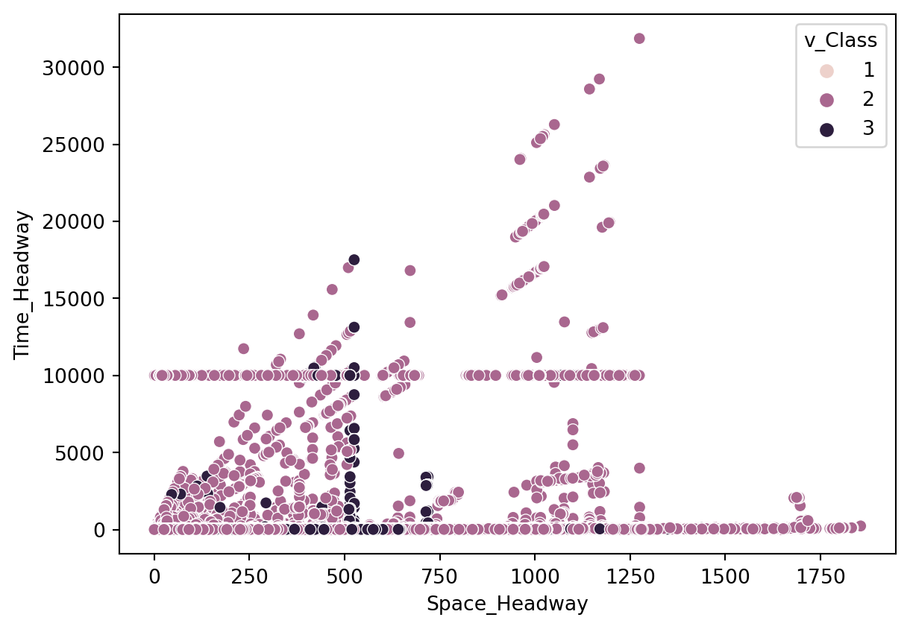
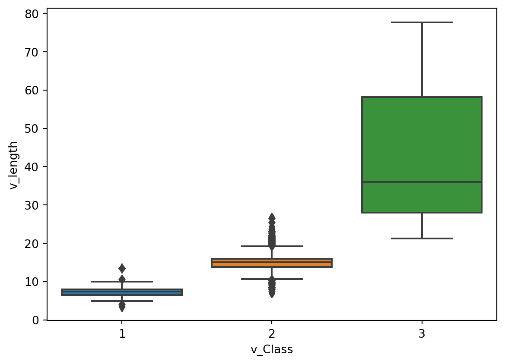
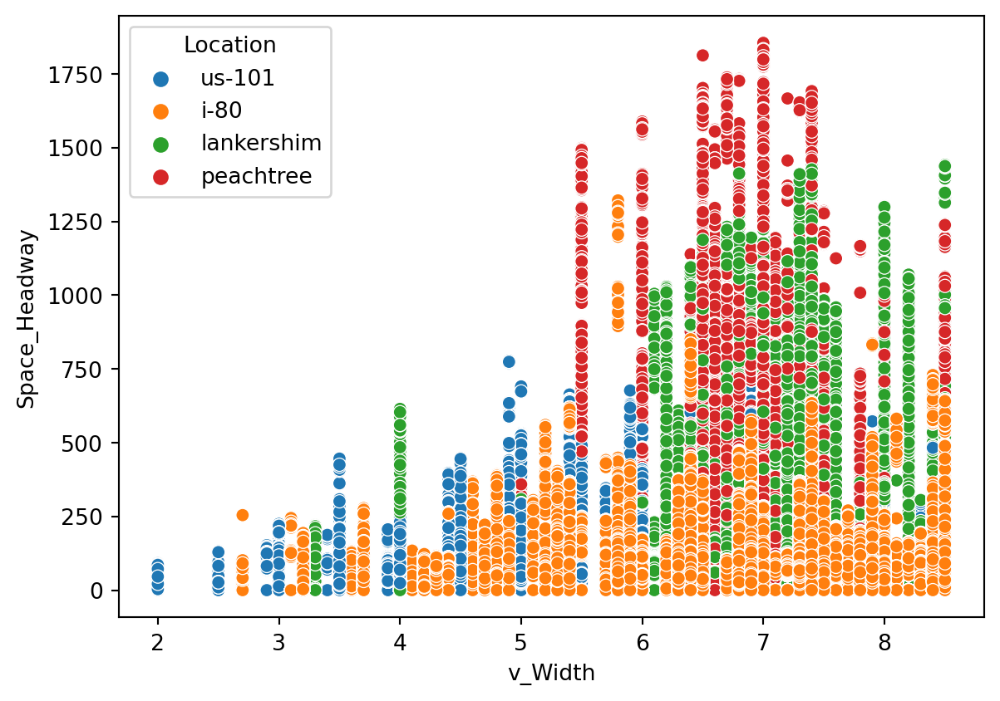

#Import all the libraries
import numpy as np
import pandas as pd
import matplotlib.pyplot as plt
import seaborn as sns
import itertools
import warnings
warnings.filterwarnings("ignore")Car following: EDA for NGSIM Dataset
def sniff(df):
with pd.option_context("display.max_colwidth", 20):
info = pd.DataFrame()
info['data type'] = df.dtypes
info['percent missing'] = df.isnull().sum()*100/len(df)
info['No. unique'] = df.apply(lambda x: len(x.unique()))
info['Min Value'] = df.apply(lambda x: np.nanmin(x))
info['Max Value'] = df.apply(lambda x: np.nanmax(x))
info['unique values'] = df.apply(lambda x: x.unique())
return info.sort_values('data type')from pathlib import Path
p = Path().cwd()
print(f"original File path: {p}")
print(p)
#updating to add the data to the file path and removing the current ipynb code library
stringpath= str(p)[0:str(p).rfind('\\')] + '\\data'
print(f"Updated File Path to pick from Data Library: { stringpath}")
ngsimfile=stringpath + '/' + 'Next_Generation_Simulation__NGSIM__Vehicle_Trajectories_and_Supporting_Data.csv'
ngsim = pd.read_csv(ngsimfile,low_memory=False)
#ngsim.describe
sniffed_data= sniff(ngsim)
sniffed_dataoriginal File path: C:\Users\StudentAccount\Python\Capstone\gitcodelocation\DataDrivenCarFollowing\datadrivencarfollowing-v1\scripts
C:\Users\StudentAccount\Python\Capstone\gitcodelocation\DataDrivenCarFollowing\datadrivencarfollowing-v1\scripts
Updated File Path to pick from Data Library: C:\Users\StudentAccount\Python\Capstone\gitcodelocation\DataDrivenCarFollowing\datadrivencarfollowing-v1\data| data type | percent missing | No. unique | Min Value | Max Value | unique values | |
|---|---|---|---|---|---|---|
| Vehicle_ID | int64 | 0.000000 | 3233 | 1 | 3366 | [515, 2224, 2127, 1033, 1890, 744, 879, 2283, ... |
| Frame_ID | int64 | 0.000000 | 11691 | 1 | 11691 | [2330, 6548, 6459, 4827, 9157, 3392, 6336, 800... |
| Total_Frames | int64 | 0.000000 | 1837 | 2 | 2434 | [1123, 1902, 567, 592, 628, 996, 811, 1821, 11... |
| Global_Time | int64 | 0.000000 | 88516 | 1163019100 | 1118937747000 | [1118848075000, 1113437421700, 1118847624800, ... |
| Following | int64 | 0.000000 | 3234 | 0 | 3366 | [523, 2211, 2132, 1040, 1897, 752, 881, 2344, ... |
| Preceding | int64 | 0.000000 | 3228 | 0 | 3366 | [500, 2208, 2124, 1029, 1882, 740, 869, 2330, ... |
| v_Class | int64 | 0.000000 | 3 | 1 | 3 | [2, 3, 1] |
| Lane_ID | int64 | 0.000000 | 18 | 0 | 9999 | [3, 4, 2, 1, 5, 6, 12, 0, 11, 7, 8, 31, 101, 9... |
| Space_Headway | float64 | 0.000000 | 88292 | 0.0 | 1855.75 | [119.1, 53.34, 48.92, 38.81, 102.65, 37.8, 22.... |
| Movement | float64 | 79.062482 | 4 | 1.0 | 3.0 | [nan, 1.0, 2.0, 3.0] |
| Direction | float64 | 79.062482 | 5 | 1.0 | 4.0 | [nan, 4.0, 1.0, 2.0, 3.0] |
| Section_ID | float64 | 79.062482 | 8 | 0.0 | 6.0 | [nan, 3.0, 0.0, 2.0, 4.0, 5.0, 1.0, 6.0] |
| Int_ID | float64 | 79.062482 | 7 | 0.0 | 5.0 | [nan, 0.0, 2.0, 4.0, 3.0, 1.0, 5.0] |
| D_Zone | float64 | 79.062482 | 21 | 201.0 | 223.0 | [nan, 201.0, 203.0, 205.0, 208.0, 212.0, 214.0... |
| v_Acc | float64 | 0.000000 | 3167 | -15.84 | 15.84 | [2.05, -0.76, 11.2, 0.1, -0.55, -0.04, 0.0, 3.... |
| Time_Headway | float64 | 0.000000 | 64492 | 0.0 | 31864.08 | [5.11, 2.01, 1.3, 0.92, 2.27, 1.54, 9999.99, 7... |
| v_Vel | float64 | 0.000000 | 8986 | 0.0 | 95.3 | [23.31, 26.54, 37.52, 41.99, 45.12, 24.54, 0.0... |
| v_Width | float64 | 0.000000 | 58 | 2.0 | 8.5 | [6.9, 4.4, 8.5, 5.9, 7.0, 7.4, 7.8, 4.9, 7.9, ... |
| v_length | float64 | 0.000000 | 362 | 3.5 | 77.7 | [13.0, 14.3, 13.5, 24.0, 15.0, 15.9, 16.2, 15.... |
| Global_Y | float64 | 0.000000 | 3833428 | 1375532.938 | 2134845.191 | [1873252.549, 2133542.012, 1872172.475, 187225... |
| Global_X | float64 | 0.000000 | 2007060 | 2230210.33 | 6452740.916 | [6451203.729, 6042814.264, 6452425.122, 645234... |
| Local_Y | float64 | 0.000000 | 2012945 | 0.0 | 2235.252 | [188.062, 472.901, 1775.614, 1701.144, 817.521... |
| Local_X | float64 | 0.000000 | 151978 | -325.625 | 160.884 | [30.034, 41.429, 19.632, 6.202, 53.514, 28.878... |
| O_Zone | float64 | 79.062482 | 23 | 0.0 | 123.0 | [nan, 108.0, 111.0, 102.0, 123.0, 101.0, 115.0... |
| Location | object | 0.000000 | 4 | i-80 | us-101 | [us-101, i-80, lankershim, peachtree] |
Observations: 1. Even though there are 3233 vehicles but the range is present from vehicle ID 1 to ID 3366. 2. Frame ID exist from 1-11691 with frame difference of 1. 3. There are a total of 1837 frames with range from 2-2434 with missing frame numbers but no row with missing frame details. 4. Even though there are only 3366 Cars in Vehicle ID, there exists 1 additional in Following Car Id, additional value is 0, which is present in Following. 5. Even though there are only 3366 Cars in Vehicle ID, there exists 1 additional in Preceding Car Id, additional value is 0, which is present in Preceding but not in IDs. There are 6 Car IDs which are not preceding any vehicle. 6. Vehicle type and info based on Class: 1. Vehicle Class 1: These have short length(~10) and width(4). 2. Vehicle Class 2: These have Medium length(~15) and medium to large width(6-7). 3. Vehicle Class 3: These have large length(>30) and largest width(>8). 7. Most vehicles drive very close to the Preceeding vehicle. There are very less cases of big Space between vehicles in Class Type 1, increases slightly with Class Type 2 and even more with Class Type 3 8. For Most cases, Space and Time headway have positive relationship, if one increases, so does the other> however there are scenarios where even with very big space the timeheadway is almost zero.
ngsim["Vehicle_class"] = ngsim["v_Class"].map({1:"motorcycle", 2: "auto", 3: "truck"})
sns.scatterplot(data=ngsim,x='Space_Headway',y='Time_Headway',hue='v_Class')
plt.show()
sns.scatterplot(data=ngsim,x='Space_Headway',y='v_length',hue='v_Class')
plt.show()
sns.boxplot(data=ngsim,y='v_length',x='v_Class')
plt.show()
sns.boxplot(data=ngsim,y='v_Width',x='v_Class')
plt.show()
sns.boxplot(data=ngsim,y='Space_Headway',x='v_Class')
plt.show()
sns.scatterplot(data=ngsim, x='v_Width', y='Space_Headway')
plt.show()
sns.scatterplot(data=ngsim, x='v_Width', y='Space_Headway', hue = "Location")
plt.show()
PrecedingButNoID = set(ngsim["Preceding"].unique()) - set(ngsim["Vehicle_ID"].unique())
IDButNoPreceding = set(ngsim["Vehicle_ID"].unique()) - set(ngsim["Preceding"].unique())
FollowingButNoID = set(ngsim["Following"].unique()) - set(ngsim["Vehicle_ID"].unique())
IDButNoFollowing = set(ngsim["Vehicle_ID"].unique()) - set(ngsim["Following"].unique())
print(f"Preceding Vehicle But Not in ID: {PrecedingButNoID}")
print(f"ID But Not in Preceding Vehicle: {IDButNoPreceding}")
print(f"Following Vehicle But Not in ID: {FollowingButNoID}")
print(f"ID But Not in Following Vehicle: {IDButNoFollowing}")
sns.countplot(data=ngsim,x='v_Class')
plt.show()
sns.countplot(data=ngsim,x='Lane_ID')
plt.show()
sns.countplot(data=ngsim,x='Location')
plt.show()
corelation = ngsim.corr()
sns.heatmap(corelation, xticklabels=corelation.columns, yticklabels=corelation.columns, annot=True)
sns.boxplot(data=ngsim,y='Space_Headway',x='Location')
plt.show()
# Creating heatmap to observe correlation between each numerical values
# Set Background
sns.set(style = 'white', font_scale =2)
# Compute the matrix
corr = ngsim.corr()
# Generate the mask for the upper triangle
mask = np.zeros_like(corr, dtype=np.bool)
mask[np.triu_indices_from(mask)] = True
# Set up the matplotlib figure
f, ax = plt.subplots(figsize=(18, 15))
f.suptitle("Correlation Matrix", fontsize = 40)
# Generate a custom diverging colormap
cmap = sns.diverging_palette(220, 10, as_cmap=True)
# Draw the heatmap with the mask and correct aspect ratio
sns.heatmap(corr, mask = mask, cmap=cmap, vmax=.3, center=0,
square=True, linewidths=.5, cbar_kws={"shrink": .5})
#Box plots for accerelation vs. relevent categorical varible
sns.boxplot(data=ngsim, x='v_Class', y='v_Vel')
plt.show()
sns.boxplot(data=ngsim, x='Location', y='v_Vel')
plt.show()
sns.boxplot(data=ngsim, x='Direction', y='v_Vel')
plt.show()
sns.boxplot(data=ngsim, x='Movement', y='v_Vel')
plt.show()
sns.boxplot(data=ngsim, x='Lane_ID', y='v_Vel')
plt.show()
#Box plots for accerelation vs. relevent categorical varible
sns.boxplot(data=ngsim, x='v_Class', y='v_Acc')
plt.show()
sns.boxplot(data=ngsim, x='Location', y='v_Acc')
plt.show()
sns.boxplot(data=ngsim, x='Direction', y='v_Acc')
plt.show()
sns.boxplot(data=ngsim, x='Movement', y='v_Acc')
plt.show()
sns.boxplot(data=ngsim, x='Lane_ID', y='v_Acc')
plt.show()

Preceding Vehicle But Not in ID: {0}
ID But Not in Preceding Vehicle: {3030, 3322, 3323, 3324, 3326, 3327}
Following Vehicle But Not in ID: {0}
ID But Not in Following Vehicle: set()